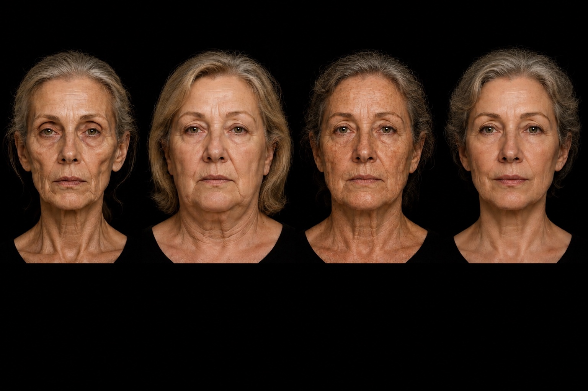

The LIFT philosophy
Same concern.
Different anatomy.
People can be the same age — and even share the same concern — while the anatomical drivers of facial aging are completely different.

Treatment should follow the dominant problem — not simply the area that bothers the patient.
Aging pattern
Select the dominant domains
Use the LFAS assessment already completed. Choose the primary driver, then the secondary driver.
Select the primary driver.
Patient-facing explanation
Your aging pattern
Primary driver
Secondary driver
What this means
Phenotype-directed strategy
Treatment priorities
Treat the dominant problem first. Reassess between stages rather than using one treatment to compensate for a different anatomical problem.
Treatment selection
Build the LIFT plan
Select the modalities you are actually recommending. The app organizes them into a staged plan.
YOUR LIFT PLAN
Clinical decision support only. Final treatment selection, sequencing and candidacy remain subject to physician assessment and clinical judgment.